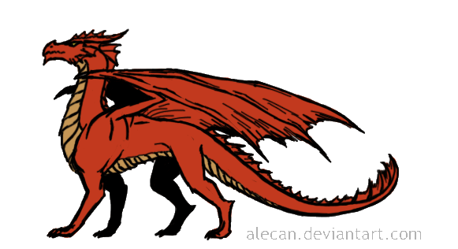

The standerd action is the most common type of action. It includes attacking and casting a spell.

Move Action
The move action is used when ever you move before or after any of your actions. The move action can be swaped with any equivlent standard action. Note: the
piagram theorem
does not apply to D&D so moving diaganaly counts as one move.
Free Action
Free actions are actions that take very little time. Some examples of a free action are. Droping a wepon, droping prone, and speaking.
Full-Round Action
When taking a full round action you can only take a 5ft step before, during, or after. However, some full-round actions do not permit movement.


 does not apply to D&D so moving diaganaly counts as one move.
does not apply to D&D so moving diaganaly counts as one move.